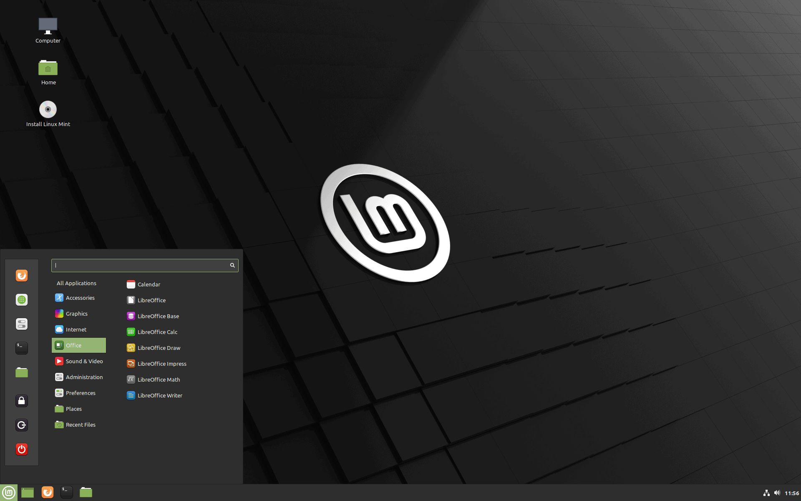
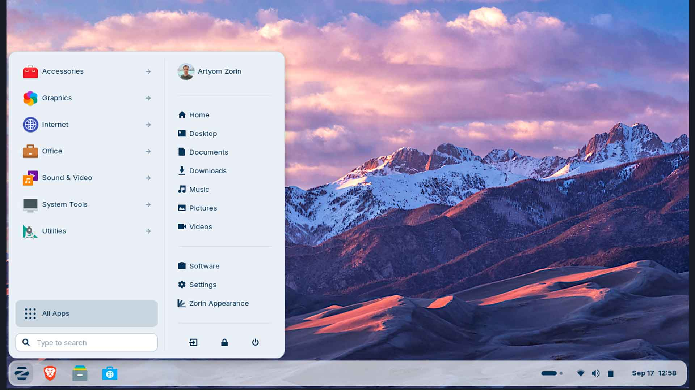
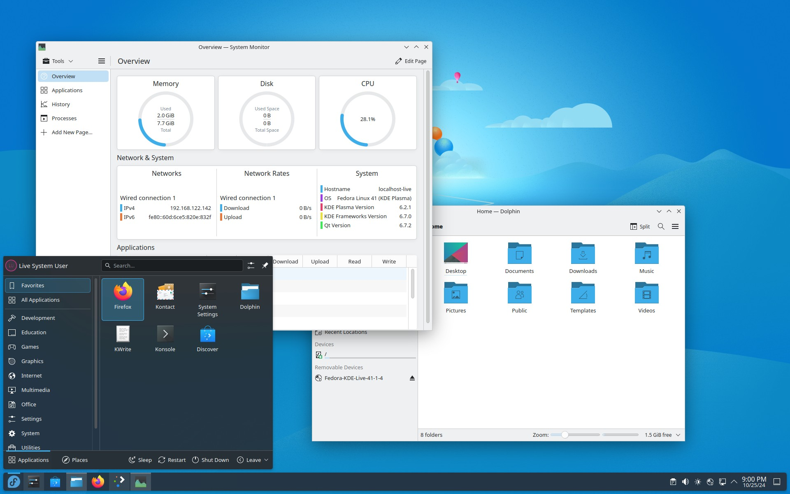
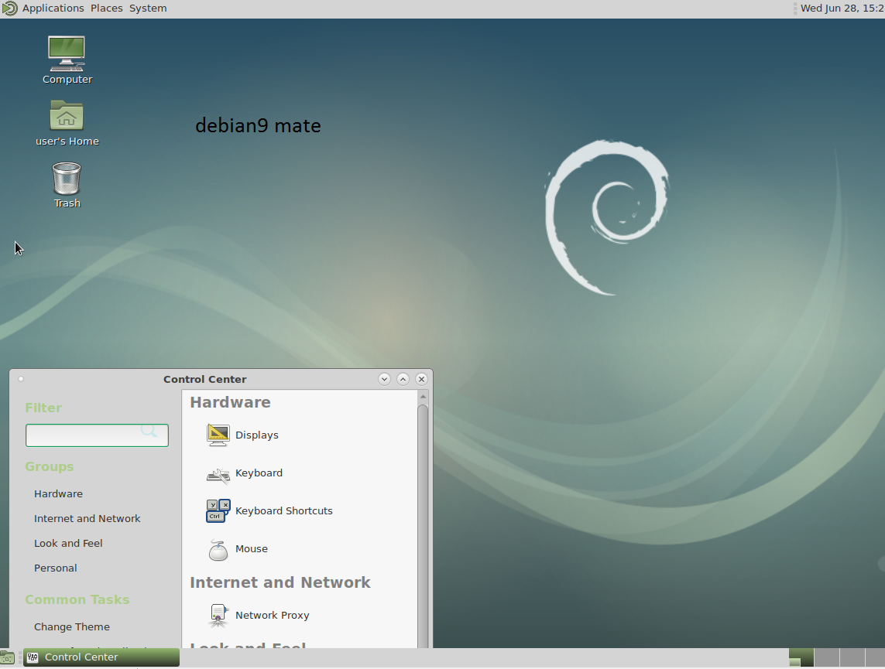
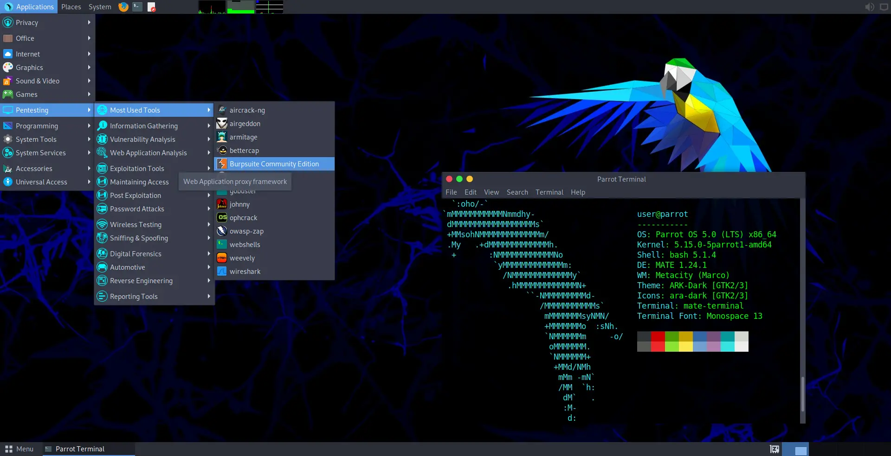
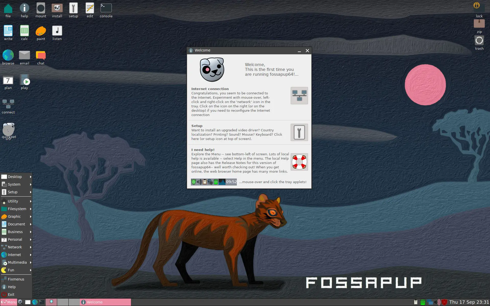
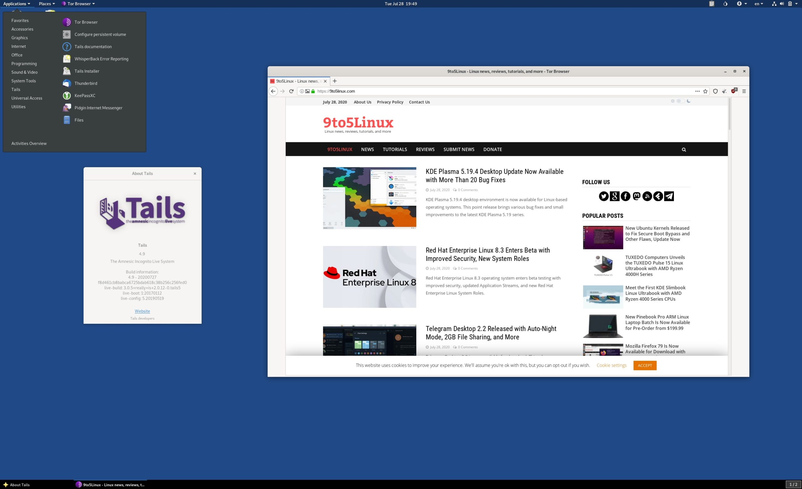

Linux Mint 22 - Desktop Cinnamon

Zorin OS 18 - Eleganza e Semplicità

Fedora 43 - Innovazione Pura

Debian - La Stabilità Leggendaria

Parrot OS - Sicurezza e Privacy

Lubuntu - Leggerezza e Velocità

Puppy Linux - Per PC da Museo

Tails - Anonimato Totale

Dettagli del Menu Cinnamon